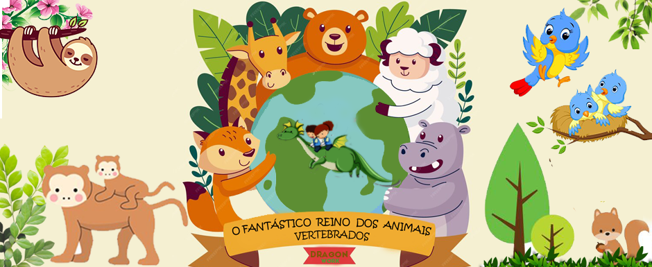

Este é um modelo de site feito para apresentação em trabalho do curso de Análise e Desenvolvimento de Sistemas
da Universidade do Grande Rio(UNIGRANRIO).
Nome dos alunos e desenvolvedores deste site:
- ESTEPHANE BATISTA DOS SANTOS - Matrícula: 0082297
- CLAUDIO DA SILVA MONTEIRO - Matrícula: 65198
- JOAO LUCAS DE CARVALHO - Matrícula: 0087349
- RODRIGO FELICIANO DA COSTA - Matrícula:0071965
Esperamos que o site tenha cumprido seu obnetivo, em educar e divertir os jovens exploradores, com um conteúdo
de fácil entendimento e bastante interativo!
Início